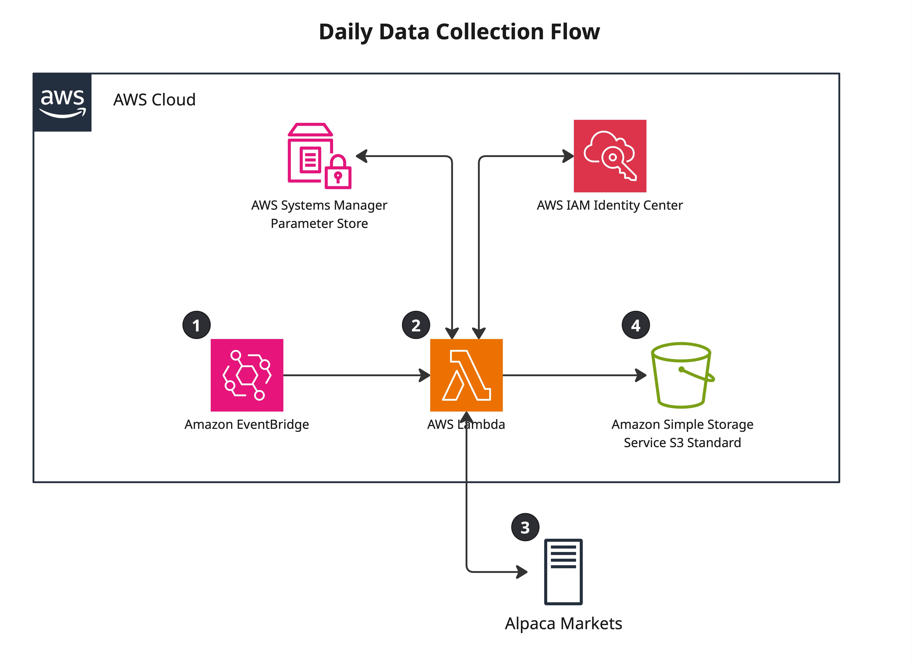
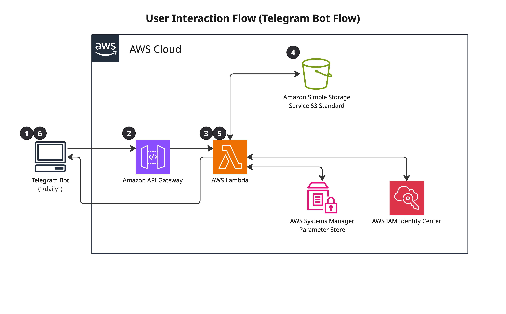

SAM Template Structure
The entire system deploys through AWS SAM (Serverless Application Model), which
extends CloudFormation with higher-level constructs for serverless resources.
A single template.yaml defines both Lambda functions, a shared IAM
execution role, EventBridge scheduling, API Gateway configuration, and S3 bucket setup.
template.yaml defines:
├── DataCollectorFunction
│ ├── Runtime: python3.12
│ ├── Memory: 1024 MB
│ ├── Timeout: 900s
│ ├── Events: EventBridgeRule (cron)
│ └── Role: LambdaExecutionRole (shared)
│
├── TelegramBotFunction
│ ├── Runtime: python3.12
│ ├── Memory: 512 MB
│ ├── Timeout: 60s
│ ├── Events: ApiGatewayWebhook
│ └── Role: LambdaExecutionRole (shared)
│
├── DataBucket (S3)
│ ├── SSE-S3 encryption
│ └── Versioning: Enabled (no lifecycle policy, see Operational Learnings)
│
└── WebhookApi (API Gateway)
└── POST /webhook → TelegramBotFunction
SAM (Serverless Application Model) is an AWS framework that sits on top of
CloudFormation and provides a simplified syntax for defining Lambda functions,
API Gateway endpoints, and their associated resources. The two main commands
used throughout development were sam build, which compiles the
Python functions and resolves dependencies into a deployment package, and
sam deploy, which uploads that package to S3 and applies any
infrastructure changes via CloudFormation. SAM handles the translation between
its simplified template format and the underlying CloudFormation resources,
and it tracks stack state so subsequent deploys only update what changed.
IAM Design
Both functions share a single LambdaExecutionRole. The role grants:
- S3 read and write access (
GetObject,PutObject,DeleteObject,ListBucket) scoped to the data bucket ssm:GetParameterandssm:GetParametersscoped to the/screener/*parameter pathlambda:InvokeFunctionandlambda:ListFunctionsonResource: "*", used by the bot's/triggercommand- CloudWatch Logs write access for both functions
S3 and SSM access is scoped to specific resource ARNs. The Lambda invoke permissions
use a wildcard resource, which is a known over-provisioning. The correct fix is to pass the
collector's ARN as an environment variable at deploy time and scope the
InvokeFunction permission to that specific ARN, which would also
eliminate the fragile name-scan used by /trigger.
In a production system, the functions would have separate roles: the bot would be read-only on S3, and each function's SSM access would be scoped to only the parameters it actually reads.
Network Architecture
Both Lambda functions ran without VPC attachment, in Lambda's default managed network environment. This was a deliberate cost decision.
Lambda accesses S3 and Parameter Store through AWS internal service endpoints. Data routes over AWS's backbone without traversing the public internet. External API calls to Polygon, Alpaca, and Telegram use standard HTTPS. For a personal trading tool, this level of network isolation was sufficient.
Lambda Configuration
Memory Sizing
The two functions are sized to their workloads. The data collector runs at 1,024 MB because it fetches price history for ~750 stocks sequentially and uses pandas to load and rewrite the results CSVs in memory. The bot runs at 512 MB. Its work is JSON parsing and S3 reads, and CloudWatch logs showed it using ~170 MB in practice. Lambda billing is GB-seconds, so right-sizing each function independently matters, even if the absolute cost is small at this scale.
# CloudWatch log example (bot function) Duration: 2099.62 ms Billed Duration: 5455 ms Memory Size: 512 MB Max Memory Used: 170 MB Init Duration: 3354.69 ms ← cold start
Cold Starts
Cold starts add 3–4 seconds on the first invocation. For a daily data collection job or an on-demand Telegram bot, this is acceptable. Waiting about 5 seconds for a /daily response was a minor inconvenience. Optimising cold starts (smaller packages, provisioned concurrency) is not worth the added complexity at this usage scale.
Timeouts
Data collector: 900 seconds (the AWS hard ceiling for Lambda). The function processes ~750 stocks sequentially with rate-limit pauses built in. A recorded production run completed in 81.65 seconds. Bot function: 60 seconds, sufficient for S3 reads and Alpaca API calls.
EventBridge Scheduling
An EventBridge cron rule invoked the data collector daily at 11:00 UTC. EventBridge cron expressions are evaluated in UTC, so the run started at 6 AM ET during US standard time and 7 AM ET during daylight saving time. Both are before the US market open (9:30 AM ET). Each run used the previous day's end-of-day data from Polygon.
ScheduleExpression: cron(0 11 * * ? *)
EventBridge delivers the event to the Lambda function. If the invocation fails, Lambda has built-in retry logic (2 retries by default for async invocations). A dead-letter queue could capture failed events for later inspection.
stocks_analyzed == 0.
The second is to publish stocks_analyzed as a CloudWatch custom metric on each run,
with an alarm that notifies via SNS if the value drops below a threshold or the
function has not run within the expected window. Together these would have caught
the lapse within one business day.
S3 Storage Design
Three CSV files in one S3 bucket serve as the entire data layer:
| File | Contents | Updated |
|---|---|---|
russell_1000_drawdown_results.csv | Full ranked universe with custom metrics | Appended daily |
daily_top_candidates.csv | Top 10 candidates ranked by strategy metric | Overwritten daily |
portfolio_snapshots.csv | Current Alpaca positions snapshot | Appended daily |
Two files, the universe results and the portfolio snapshots, have each run's rows appended, so they build up a history over time. The candidates file is overwritten daily because it only represents the current top 10. Historical analysis is done locally by downloading the files via presigned URL. S3 is not queried as a time-series store.
Versioning Lesson
S3 versioning is enabled on the bucket without a lifecycle policy. Every write creates a new version and keeps the previous copy as a non-current version. This applies to the overwritten candidates file and also to the two appended files, which are read and rewritten in full on each run, so each retained copy is larger than the last. As a result the bucket grows without limit. A lifecycle rule expiring non-current versions after 1 day would fix this. It has not been added to the template.
Parameter Store
Six parameters are stored as SecureString parameters in AWS Systems Manager Parameter Store:
/screener/polygon/api_key /screener/alpaca/api_key /screener/alpaca/secret_key /screener/alpaca/base_url /screener/telegram/bot_token /screener/telegram/chat_id
All parameters live under the /screener/ path prefix, which matches
the IAM policy scope. chat_id is not a credential but an authorised
user identifier. The bot reads it at runtime to validate incoming Telegram
messages before executing any command. Parameters are encrypted at rest by KMS.
No credentials are stored in environment variables.
I chose Parameter Store over Secrets Manager for this use case because standard parameters are free, and the automatic rotation features of Secrets Manager are not needed for API keys that are rotated manually.
Data Flow
Daily Collection (11:00 UTC)

- EventBridge fires cron rule, invokes Data Collector Lambda
- Lambda retrieves Polygon and Alpaca credentials from Parameter Store
- Calls the Polygon snapshot endpoint, then fetches daily price history for ~750 Russell 1000 stocks
- Ranks all stocks by strategy metric, selects top 10 candidates
- Calls the Alpaca positions endpoint to fetch current holdings data
- Writes three files to S3: full ranked universe (appended), top 10 candidates (overwritten), portfolio snapshot (appended)
- Lambda exits
On-Demand Query (Telegram commands)

- User sends a command in Telegram
- Telegram POSTs to API Gateway webhook endpoint
- API Gateway invokes Telegram Bot Lambda
- Lambda validates
chat_idagainst an authorised value stored in Parameter Store. Unauthorised requests are rejected. - Lambda retrieves credentials from Parameter Store and executes the command
- Formats results into a Telegram message and sends via Telegram Bot API
- Lambda exits
Several commands were implemented, though in practice /daily was the one used most.
| Command | What it does |
|---|---|
/dashboard, /daily | Reads portfolio and screening CSVs from S3, calls Alpaca account endpoint |
/screen | Reads top candidates or full universe CSV from S3 |
/portfolio | Reads portfolio snapshot CSV from S3 |
/account | Calls Alpaca account endpoint directly for equity, cash and buying power |
/trigger | Invokes the data collector Lambda asynchronously to force an out-of-schedule run |
/stats | Reads all three CSVs, reports row counts and latest dates |
Telegram Bot Interface
I chose Telegram's bot platform over a web dashboard for three reasons: it provides native mobile push notifications, text responses are simpler to implement than a charting interface, and the bot API uses a webhook model that maps directly to API Gateway and Lambda.
Most commands are read-only against S3. Three commands go further: /account
and /dashboard call Alpaca directly for live account data, and
/trigger invokes the collector Lambda asynchronously, which I used to
force a fresh run outside the scheduled window without logging into AWS.
All requests are authenticated by validating the incoming chat_id
against a value stored in Parameter Store. Any request from an unrecognised chat
is blocked before any data is accessed.
/trigger uses fragile function discovery. The command
scans all Lambda functions in the account and matches by name substring. Renaming
the collector Lambda function would break /trigger silently. The correct approach is to pass the collector's ARN as an environment variable
at deploy time (!GetAtt DataCollectorFunction.Arn in the SAM template),
which would also allow the lambda:InvokeFunction permission to be
scoped to that specific ARN instead of *.
Observability
CloudWatch log groups are defined in the SAM template with explicit retention policies: 30 days for the data collector and 14 days for the bot. CloudWatch Logs charges for storage, so unlimited retention adds cost over time.
stocks_analyzed on each run, with an
alarm that sends an SNS notification if the value is zero or if the function has
not run within the expected window.
Cost Breakdown
| Service | Monthly cost | Notes |
|---|---|---|
| Lambda | ~$0 | Well within 1M request free tier |
| EventBridge | ~$0 | 1 rule, well within free tier |
| API Gateway | ~$0 | Sporadic requests, free tier |
| S3 | ~$0.01 | 3 small CSV files |
| Parameter Store | ~$0 | Standard parameters are free |
| CloudWatch Logs | ~$0.10 | Minimal log volume |
| Total | Under $1/month | AWS charges only |
AWS charges were under $1/month, with most services inside the free tier. The only meaningful cost was the Polygon API subscription.
Operational Learnings
- Validate data before reporting success. A Lambda that completes successfully with empty output is harder to detect than one that throws an exception. I would include data validation in any similar project.
- Add a lifecycle policy when enabling S3 versioning. Versioning without expiry rules keeps a full copy of every overwritten object, so storage keeps growing every day on any bucket with regular overwrites.
- Tag resources from the start. Running multiple projects in one account without tagging makes cost attribution and resource cleanup significantly harder.
-
Build the commands that are actually used. I built several
Telegram bot commands, but in practice I mainly used one (
/daily). - Choose services based on workload requirements. I chose S3 CSV files over RDS, Lambda over EC2, and Parameter Store over Secrets Manager based on what this workload needed.